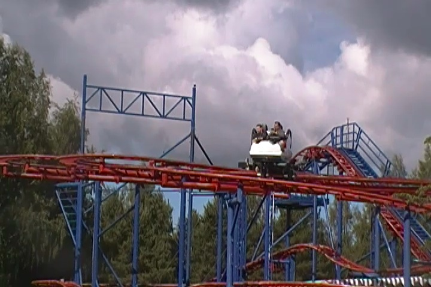
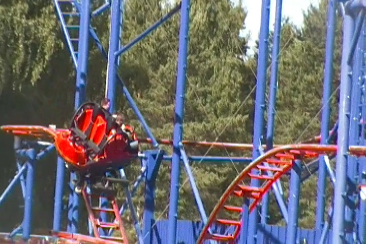
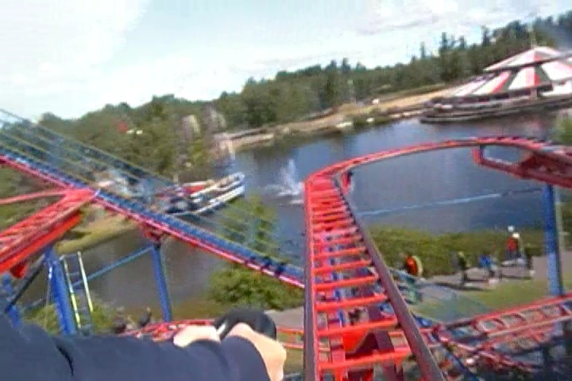
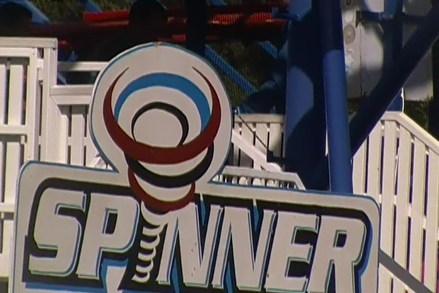

| |
Spinner Review

All right. We're here at Skara Sommerland, where we're going to review Spinner. The park's spinning mouse. This is intersting as it's a Maurer Spinning Coaster, which tend to have really cool layouts. Some are seriously amazing. So what do they give us? The standard Spinning Mouse. *Sigh* Lame. Oh well. We get into our cars and away we go. We roll through a turn and through some straight track and then head up the lifthill. You head off the lifthill and into a turn. And of course, as we're rolling through the upper set of switch backs, theres a little bit of spinning, but it's very tame and not that exciting. After the switchbacks, you head into a tiny dip and then head into the biggest drop of the ride. We gain some speed as we dip to the ground. We then head into a small hill, turn around, go through a couple tiny little dips, turn around, one itty bitty little dip right into the brake run. And yeah. That's it. Honestly, even the typical spinning mice by Zamperla and Reverchon are better than this. At least those have more switchbacks. This...this is just a lazier version of that. Yeah, it's not the worst spinning coaster ever, and I can think of a couple fun things about it. But honestly, yawn. Get the credit and move on.
5/10
Location: Skara Sommerland
Opened at the German Fair Circuit in 2000
Moved to Abenteuer Park Oberhausen in 2001
Moved to Skara Sommerland in 2011
Built by: Maurer Söhn
Last Ridden: June 23, 2014
Spinner Photos



Home
|